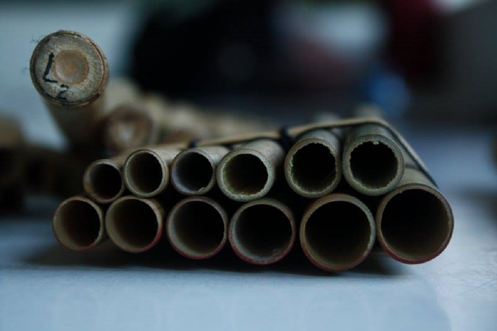

Lakitas from Northern Chile
Note 029
Home > Blog A Musician's Log > Note 029
One melody, several players
In the Aymara musical traditions of northern Chile, lakitas are panpipe ensembles whose melodies emerge through coordinated performance rather than through the uninterrupted playing of a single instrumentalist. Particularly associated with Arica and Parinacota, Tarapacá, and neighbouring Andean regions, these ensembles belong to the wider family of sikuri traditions, while exhibiting distinctive characteristics in instrument construction, tuning, repertoire, and social organization.
The terminology itself varies. Musicians in Arica may refer to the instrument as laka, lakita, caña, or zampoña, and to its performer as lakita, soplador, or zampoñero. These denominations are not always used consistently, reflecting the coexistence of regional conventions and changing musical identities (Fortunato, 2010).
What distinguishes the ensemble is a particular organization of melodic responsibility. The notes required to complete a melody are distributed between two complementary panpipes, traditionally played by different musicians. Each performer possesses only part of the available pitch sequence, and the melodic line emerges through their coordinated entries.
The principle is familiar across several Andean panpipe traditions. Its local realization, however, depends on instrumental construction, performance technique, and the relationships established within the ensemble.
The instrument divided
In the Arica tradition, the complementary panpipes are commonly designated primera and segunda, or macho and hembra. The corresponding terms ira and arka are widely employed in other Andean contexts.
The two instruments contain different sequences of pitches arranged to complement one another. Fortunato (2010) describes a common configuration with six tubes in the macho and seven in the hembra, although additional tubes may be incorporated according to the requirements of the musicians.
This division should not be confused with the physical construction of double-row panpipes. Some lakitas possess a supplementary row of open resonating tubes that sound alongside the principal stopped pipes. These resonators contribute to the instrument's timbre, but they do not constitute the complementary melodic part played by the second musician. Such configurations were documented historically in Arica, although Fortunato found them relatively uncommon among contemporary performers.
The distinction is organologically important. The complementary melodic sequence is distributed between performers, while an additional resonating row, when present, modifies the sound of an individual instrument.
During performance, the players alternate notes according to the requirements of the melody. Their contributions are not necessarily symmetrical. One part may carry more melodic activity than the other, and passages can favour a particular instrument before returning to closer alternation.
The resulting musical texture depends on precise coordination, yet it also permits variation in articulation and phrasing. The relationship is not simply mechanical alternation between equal rhythmic units.
The musicians must learn their own sequence while remaining attentive to the complementary part. Competence therefore involves understanding a melody that no single performer ordinarily articulates in its entirety.
The tropa as an instrumental system
A complete ensemble, or tropa, may incorporate panpipes of several sizes and registers. In Arica, musicians distinguish five principal categories: toyos or sanjones, sanjas, contras, licos, and chules or requintos.
These categories establish relationships of register and instrumental function. Toyos sound approximately an octave below sanjas, while licos occupy a register an octave above them. Chules extend the range upward, and contras are positioned between the sanjas and licos, at intervals of a fifth and a fourth respectively (Fortunato, 2010).
The resulting ensemble is not simply an accumulation of identical panpipes. It is a differentiated instrumental system in which several registers contribute to the total sonority.
In an ideal formation described by musicians interviewed in Arica, the ensemble consists of seven pairs of performers distributed among these instrumental categories. Yet actual configurations depend on the availability of musicians and the requirements of particular occasions. Smaller groups frequently concentrate on sanjas and licos, omitting instruments whose execution demands greater technical effort.
The larger panpipes require substantial quantities of air. Their performers may consequently articulate simplified rhythmic versions of the melody, sustaining longer notes while musicians playing smaller instruments execute faster ornamental figures and repetitions.
Instrumental size therefore influences not only pitch but also the distribution of rhythmic activity. The ensemble's texture emerges from the interaction between physical constraints and established performance conventions.
Percussion supplies another essential component. The bombo, caja, and cymbals articulate rhythmic patterns that support the panpipe players and accompany collective movement. The percussionists are not merely supplementary performers: their contribution participates directly in the organization of the ensemble's temporal structure.
Breath, technique, and collective coordination
The divided melodic system requires considerable skill from individual musicians. It would be misleading to interpret interdependence as a substitute for instrumental proficiency.
The Arica documentation records several specialized blowing techniques, including picar and roncar or vaciar.
Picar involves controlled, economical blowing and precise embouchure, allowing players to articulate rapid rhythmic figures and ornamental repetitions. It is particularly associated with smaller panpipes, whose dimensions permit greater agility.
Roncar, by contrast, involves producing a full, resonant fundamental tone through the appropriate relationship between embouchure, airflow, and the instrument's acoustic response. Musicians distinguish this sound from an excessively high or whistling tone produced by inappropriate blowing.
These distinctions demonstrate that timbre is an important dimension of instrumental competence. The desired sound is not determined exclusively by the dimensions of the tubes. It depends on techniques learned and evaluated within the community of performers (Mora Rivera, 2010; Fortunato, 2010).
Breath management is equally important. Larger instruments impose different respiratory demands from smaller ones, and musicians must coordinate air supply with melodic phrasing, rhythmic articulation, and the entries of their partners.
Although the high-altitude environments of the Andes may introduce physiological challenges, the complementary construction of the panpipes cannot simply be explained as an adaptation to reduced atmospheric pressure. Related performance systems also operate in lower-altitude environments, including the coastal cities of northern Chile.
The division of melodic labour is a documented musical principle. Its interpretation as a physiological response to altitude would require separate evidence.
Material transformation: from cane to PVC
The construction of lakitas also illustrates the relationship between instrumental continuity and technological change.
Historically, panpipes in the region were manufactured from cane, frequently obtained through commercial connections with Bolivia. By the second half of the twentieth century, however, the difficulty of obtaining suitable materials and the fragility of cane instruments encouraged experimentation with industrial alternatives.
One of the most influential figures in this transformation was Martín Coya, a musician associated with the development of the Arica lakita tradition. According to the historical reconstruction by César Borie and Gerardo Mora (2010), Coya helped introduce and popularize PVC panpipes in Arica around the beginning of the 1970s.
The change offered practical advantages. Plastic tubing was inexpensive, relatively easy to obtain, resistant to breakage, and less demanding in maintenance. Instrument makers could construct complete sets without depending on supplies of appropriate cane.
Yet the substitution was not acoustically neutral. Musicians interviewed by Fortunato and Mora distinguished between the timbral qualities of cane and PVC, frequently attributing greater richness or resonance to the former. The adoption of plastic therefore involved a negotiation between durability, availability, fabrication, and preferred sound.
The process also required the development of local manufacturing techniques. Builders adjusted tube lengths, diameters, plugs, and tuning procedures to produce instruments suited to their ensembles.
The continued use of lakitas depended not on the preservation of an unchanged material, but on the ability of musicians and instrument makers to reproduce valued musical relationships through changing technologies.
Migration, cities, and new repertoires
The history of lakitas in northern Chile cannot be separated from migration between highland communities, mining settlements, agricultural valleys, and coastal cities.
During the twentieth century, musicians from the interior of Tarapacá and neighbouring regions moved through the nitrate-mining settlements and eventually settled in cities such as Arica and Iquique. The closure of numerous nitrate works during the 1950s contributed to these movements.
The musicians carried with them religious commitments, instrumental knowledge, and repertories associated with festivals and communal celebrations. In Arica, these practices became part of an increasingly urban musical environment.
Borie and Mora (2010) document the participation of lakita ensembles in celebrations associated with the Niño Dios, the May Cross, and the Virgen de Las Peñas. They also trace the emergence of new groups whose activities extended into neighbourhood gatherings, fundraising events, and commercial entertainment.
Repertoire changed alongside these developments. Earlier combinations of huaynos, taquiraris, waltzes, boleros, and other genres were increasingly supplemented by cumbias, particularly from the early 1970s.
These additions did not necessarily displace the complementary organization of the panpipes. Musicians adapted new melodic and rhythmic material to established instrumental relationships.
The ensemble consequently became a means of articulating both regional continuity and participation in urban musical culture.
Recording and the circulation of ensemble sound
The development of commercial recordings and new performance venues introduced additional possibilities for the circulation of lakita music.
Recordings allowed repertoires associated with particular communities and ensembles to reach audiences beyond their immediate performance environments. They also preserved examples of instrumental configurations, arrangements, and playing styles that might otherwise have remained poorly documented.
Projects such as Lakitas de Arica. Una historia fonográfica (2009) and the subsequent publications coordinated by Gerardo Mora contributed to the documentation of these changes. More recent research has examined how recordings from different decades reveal the coexistence of rural and urban styles rather than a straightforward replacement of one by the other (Mardones, 2025).
The relationship between recording and ensemble performance nevertheless requires caution. A recording can reproduce the successive notes played by complementary panpipes, but the resulting sound does not necessarily disclose which performer produces each note.
Spatial arrangement, microphone placement, and mixing may influence the listener's perception of the divided melodic system. This does not mean that recording inevitably eliminates the distinction between instrumental parts. Rather, it changes the conditions under which that distinction can be heard and studied.
The recording becomes another document of ensemble organization, one whose technical circumstances must be considered alongside the music itself.
Cooperation without uniformity
The complementary panpipe system has frequently been interpreted in relation to wider Andean principles of duality and reciprocity. Its division into associated parts offers an evident structural parallel with social and cosmological models documented in Aymara and other Andean societies (Baumann, 1996; Mardones & Ibarra, 2018).
However, this relationship should not be treated as a direct equivalence between musical structure and social ideology.
The requirement for complementary performance does not imply the absence of leadership, hierarchy, rivalry, or individual distinction. Lakita ensembles may include a caporal responsible for musical direction and organization. Musicians distinguish experienced performers from beginners, and competing groups may seek to establish their superiority through instrumental power, technical ability, or repertory.
Nor does collective performance eliminate the importance of specialized knowledge. Skilled musicians develop their own playing techniques, while established partnerships between primera and segunda performers may be maintained over many years, sometimes within families.
What the instrument requires is coordination, not social equality. Its musical organization provides an especially concrete example of distributed performance: the production of a complete melodic sequence depends on separate contributions whose relationships are learned, maintained, and evaluated collectively.
The instrument beyond the individual
The lakitas of northern Chile challenge descriptions of musical instruments that concentrate exclusively on the physical object.
An individual panpipe can be measured, classified, constructed, and sounded independently. Yet within the complementary performance system, its musical possibilities are defined through its relationship with another instrument and another performer.
The tropa extends that relationship across several registers, percussion instruments, and organizational roles. Its sound emerges from the interaction of differentiated components rather than from the multiplication of identical instruments.
Historical transformations in materials, tuning, repertoire, and performance settings have modified this system without necessarily eliminating its complementary principle.
The significance of lakita performance therefore lies neither in an imagined absence of individuality nor in the supposed impossibility of solo sound production. It lies in the organization of musical responsibility across separate instruments.
The individual panpipe produces notes. The complementary pair produces the melodic sequence. The ensemble gives that sequence its collective sonority.
Readings
- Baumann, Max Peter. 1996. "Andean Music, Symbolic Dualism and Cosmology." In Cosmología y música en los Andes, edited by Max Peter Baumann, 15–66. Frankfurt am Main/Madrid: Vervuert/Iberoamericana.
- Borie, César, and Gerardo Mora. 2010. "Historia reciente de los lakitas en Arica." In Lakitas en Arica, edited by Gerardo Mora Rivera, 133–166. Santiago: AZAPA Producciones.
- Fortunato, Andrés. 2010. "La zampoña ariqueña." In Lakitas en Arica, edited by Gerardo Mora Rivera, 75–87. Santiago: AZAPA Producciones.
- Mardones, Pablo, and Miguel Ángel Ibarra. 2018. "Lenguaje musical e identidad lakita: revitalización y continuidad de una práctica ancestral y contemporánea en el norte grande de Chile." In Música y sonidos en el mundo andino: flautas de pan, zampoñas, antaras, sikus y ayarachis, edited by Carlos Sánchez Huaringa, 325–354. Lima: Fondo Editorial de la Universidad Nacional Mayor de San Marcos.
- Mardones, Pablo. 2025. "Análisis sonoro de música lakita del Norte de Chile (1970–1980). Convivencias temporales de estilos rurales y urbanos." In Waskiris del soplido: abordaje interdisciplinario y regional sobre prácticas musicales del altiplano andino, 25–36. Lima: Fondo Editorial de la Universidad Nacional Superior de Folklore José María Arguedas.
- Mora Rivera, Gerardo. 2010. "Lakitas de vinilo en Arica." ILUMINURAS 11 (25).
Video. From YouTube user Michi MSSC.